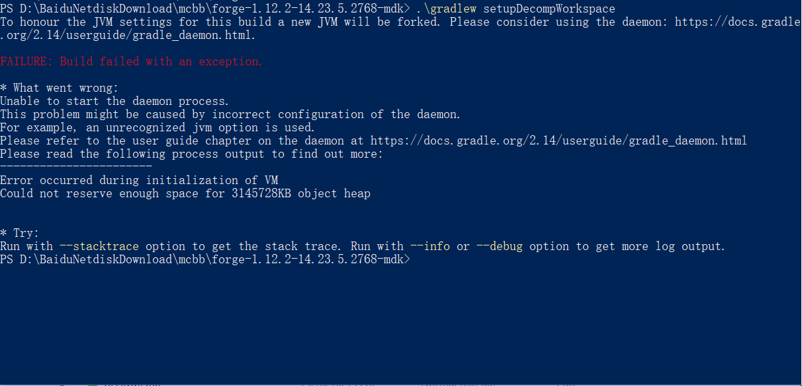

版本信息
你使用的系统： Windows10 64位系统
你是用的JDK: jdk-1.8.0_144
你使用的IDE：<IntelliJ IDEA or Eclipse or 其他>
你使用的IDE版本:<请在这里贴入你的IDE版本信息>
Forge版本: forge-1.12.2-14.23.5.2768-mdk
Minecraft版本: 1.12.2
出错图

错误情况简述
请详细说明你遇到的错误，包括你的目的。
学习过java想这自己尝试编写代码，但是卡在了环境搭建，如图输入 .\gradlew set，，，， 后出错